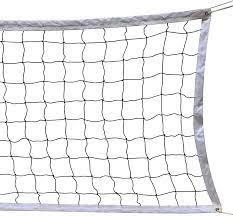
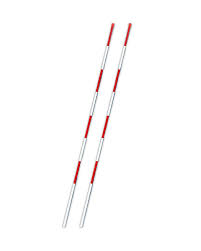
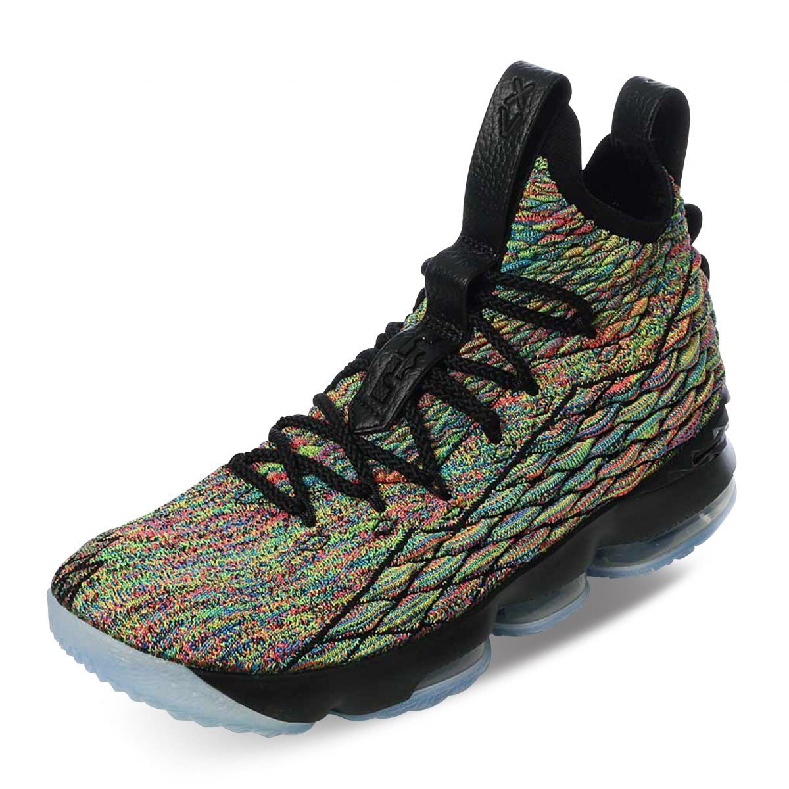
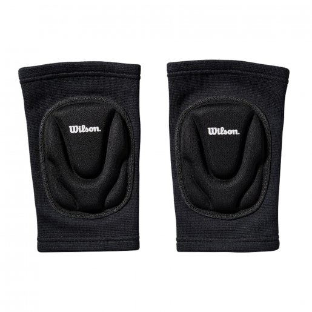
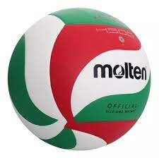

El voleibol, también conocido como volleyball en inglés, es un deporte de equipo que se juega en todo el mundo y se caracteriza por su ritmo rápido y su énfasis en la cooperación entre los jugadores. Aquí tienes una breve historia de su origen:
El voleibol fue inventado por William G. Morgan en 1895. Morgan era un instructor de educación física en la Asociación Cristiana de Jóvenes (YMCA) en Holyoke, Massachusetts, Estados Unidos. Buscaba crear un juego deportivo menos violento que el baloncesto para adultos, adecuado para un gimnasio de invierno. El voleibol se creó inicialmente con el nombre de "Mintonette".
En 1896, un observador notó que el objetivo del juego era mantener la pelota en movimiento y sugirió el nombre "voleibol". El nombre se aceptó, y desde entonces, se ha convertido en uno de los deportes más populares en todo el mundo.
A medida que se popularizó en los Estados Unidos, el voleibol comenzó a extenderse por otros países. En 1913, el primer juego internacional se jugó entre Canadá y los Estados Unidos, marcando el comienzo de su difusión global.
El voleibol se convirtió en un deporte olímpico en los Juegos Olímpicos de Verano de 1964 en Tokio. Desde entonces, ha sido un evento olímpico tanto para hombres como para mujeres y ha ganado aún más reconocimiento en todo el mundo.
El voleibol, un deporte de equipo dinámico y emocionante, ha evolucionado considerablemente desde su creación a finales del siglo XIX. En la actualidad, se ha consolidado como uno de los deportes más practicados y seguidos en todo el mundo. Con reglas estrictas y técnicas avanzadas, el voleibol se ha convertido en un espectáculo de precisión y destreza atlética. En su forma actual, el voleibol se juega en una cancha dividida por una red, con dos equipos compuestos por seis jugadores cada uno. El objetivo principal es pasar la pelota sobre la red, tratando de evitar que el equipo contrario la devuelva al suelo de su lado. Esto se logra mediante una variedad de movimientos, incluyendo saques, pases, ataques y bloqueos, que requieren habilidad y coordinación. El voleibol es un deporte rápido, con intercambios de alta velocidad y acción constante, lo que lo hace emocionante tanto para jugadores como para espectadores. A nivel profesional, el voleibol cuenta con una serie de competiciones de alto nivel, como la Liga de Voleibol de Italia, la Liga de Voleibol de Brasil y la Liga de Voleibol de Estados Unidos. Además, es un deporte olímpico desde 1964 y ha sido un punto culminante en los Juegos Olímpicos de Verano. Lo que distingue al voleibol en la actualidad es su accesibilidad y versatilidad. Se practica en playas, gimnasios y campos de todo el mundo, y es apreciado tanto en competiciones organizadas como en partidos casuales entre amigos y familiares. El voleibol promueve la cooperación y la camaradería, además de fomentar el desarrollo físico y mental de quienes lo practican. En resumen, el voleibol en la actualidad es un deporte en constante crecimiento que combina la destreza física, la estrategia y la pasión. Tanto si se juega en una playa soleada como en un estadio repleto de espectadores, el voleibol sigue emocionando y uniendo a personas de todas las edades y procedencias en todo el mundo.
Aqui tienes una lista de algunos articulos esenciales para practicar el deporte:
| Nombre | Descripción | Precio | Imagen |
|---|---|---|---|
| Red | La red también establece la altura a la que deben pasar la pelota los jugadores en cada saque y ataque. Las dimensiones de la red están reguladas por las reglas oficiales del voleibol. | $500 |  |
| Antenas | Ayudan a los jugadores y árbitros a determinar si la pelota ha cruzado la red dentro de los límites permitidos. Cuando la pelota toca las antenas o pasa por fuera de ellas, se considera fuera y se otorga un punto al equipo contrario. | $1900 |  |
| Tenis | Los tenis de voleibol suelen tener suelas de goma que ofrecen tracción en superficies de cancha y una amortiguación adecuada para proteger las articulaciones de los jugadores durante saltos y movimientos intensos. | $3000 |  |
| Rodilleras | Están diseñadas para absorber el impacto y proteger las rodillas de contusiones y abrasiones. Las rodilleras suelen estar hechas de materiales acolchados y resistentes que brindan comodidad y seguridad. | $315 |  |
| Balón | El balón se utiliza para los saques, pases, ataques y bloqueos, y debe ser golpeado con las manos o los brazos, pero no se permite su contacto con otras partes del cuerpo. Su diseño facilita un juego rápido y preciso, lo que es fundamental en el voleibol. | $800 |  |